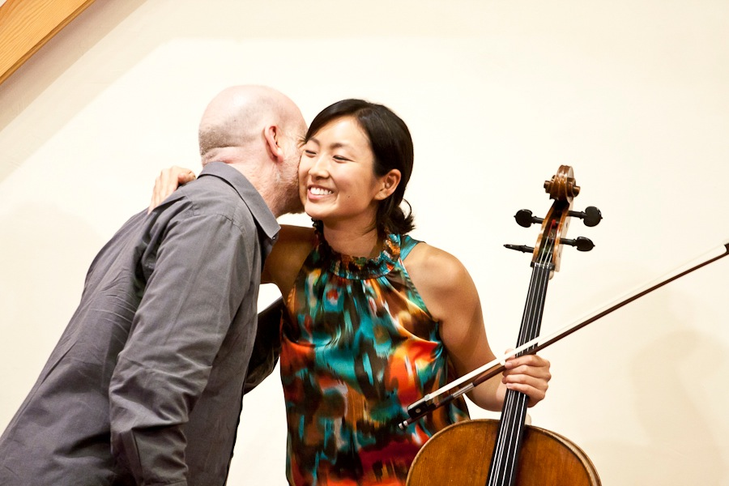
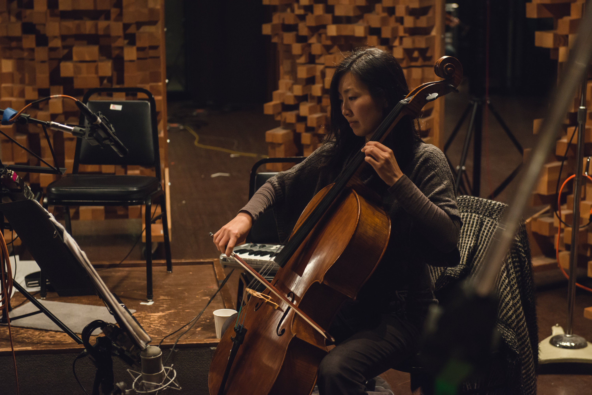
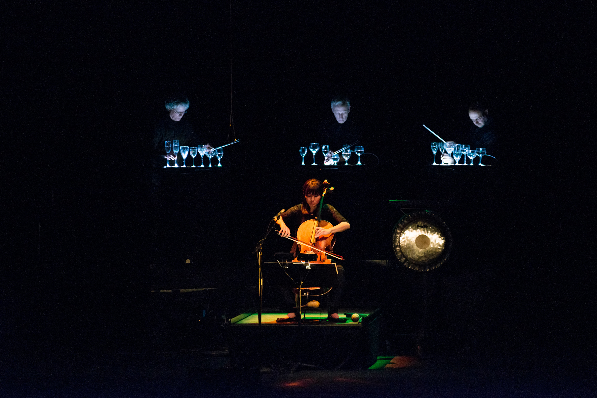

AUDIO
VIDEO
PHOTOS

With composer Brett Dean at Yellow Barn music festival

Recording at Skywalker Ranch
Sunny Yang and Wu Man

Performance of George Crumb's Black Angels
Trio Da Kali and Kronos Quartet (by Loveis Wise, New Yorker)
 2015 Kronos Festival: Terry Riley's 80th birthday celebration
2015 Kronos Festival: Terry Riley's 80th birthday celebration